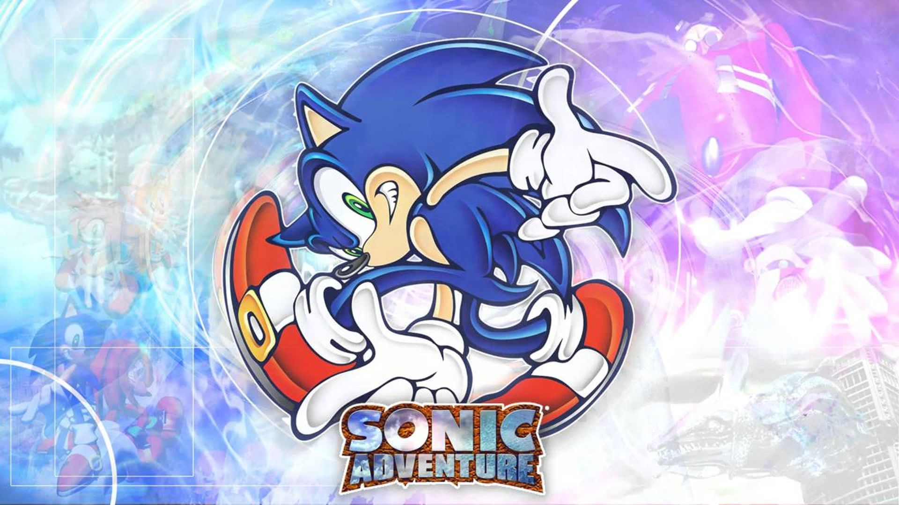
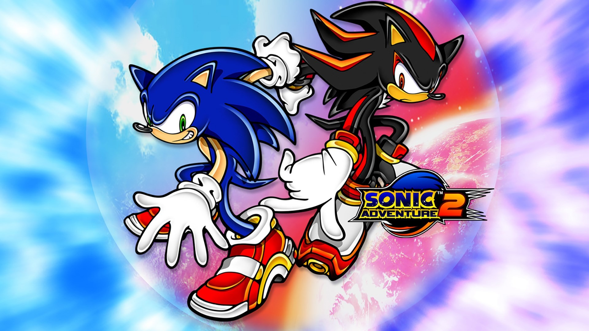
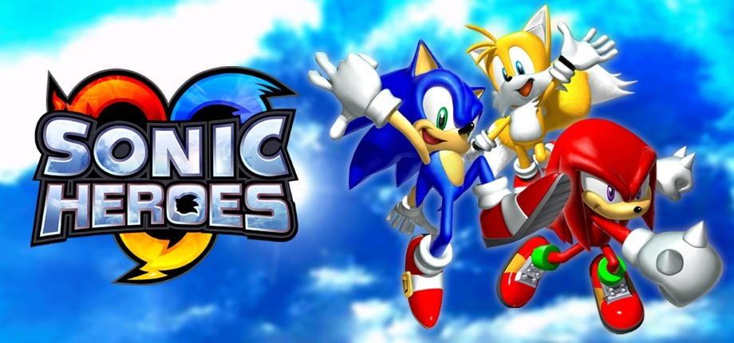
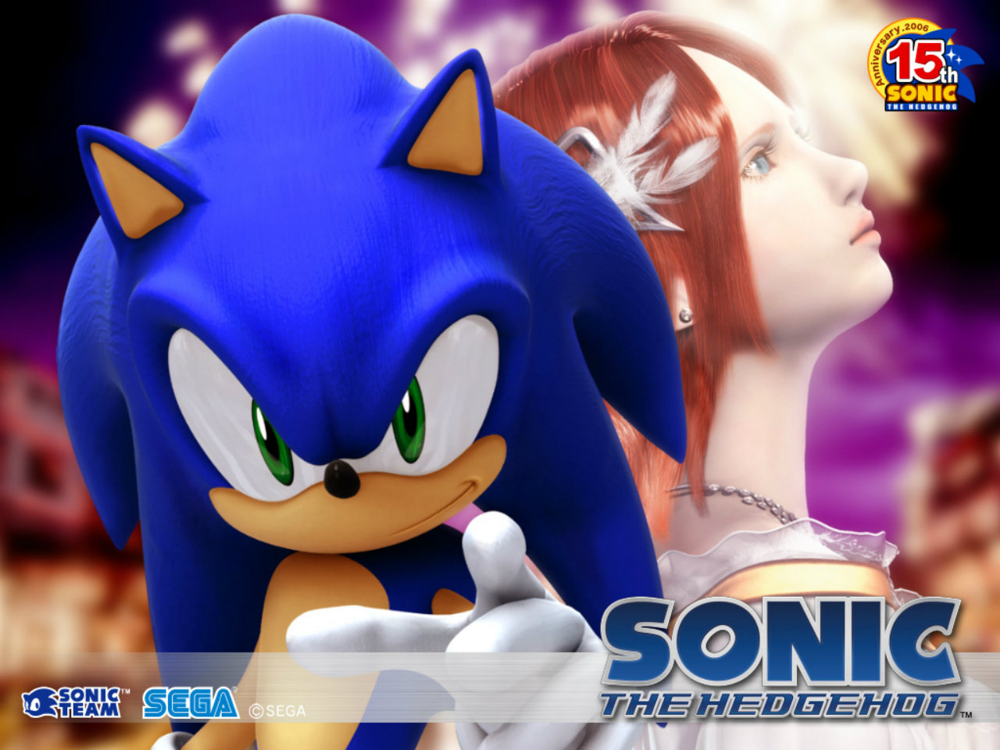

GERAÇÃO ADVENTURE
A segunda geração do ouriço, é um marco na história da franquia do ouriço, pois foi nesta geração onde Sonic entrou de vez para o universo 3D, seu estilo de jogo possui mais picos de velocidade extrema do que a Geração Clássica, além disso, introduziu vários outros personagens muito importantes e famosos da franquia e rendeu grandes títulos de peso para o ouriço, seus principais games são:
Sonic Adventure ( 1998 )
Lançado em 1998, Sonic Adventure foi a entrada de vez do mascote para o mundo dos jogos 3D, o jogo ficou muito conhecido por possuir muitos elementos que lembravam RPG, como um mapa interativo, além de itens especiais próprios de cada um dos 6 personagens jogáveis, além de uma história com enredo e tudo mais.
Sonic Adventure 2 ( 2001 )
Sequência de Sonic Adventure, este jogo foi lançado em 2001 apenas, é tido como o melhor jogo da Geração Adventure . Introduziu importantes personagens como Rouge The Bat e Shadow The Hedgehog, o rival de Sonic, diferente de seu antecessor, Sonic Adventure 2 focou mais em suas fases, não possuindo um mapa aberto, e focou principalmente em sua história, que é uma das melhores até hoje do ouriço.
Sonic Heroes ( 2004 )
Produzido e lançado em 2004, Sonic Heroes foi um jogo feito em uma linha cronológica diferente da série Adventure, trouxe o grupo Chaotix de Charmy Bee, Vector e Espio de volta, além de apostar em um estilo de jogo em trios, cada um sendo uma peça base da equipe e possuindo suas próprias mecânicas e habilidades.
Sonic The Hedgehog ( 2006 )
O Último jogo desta geração, lançado no ano de 2006, foi bastante controverso, pois possui uma ótima história com enredo e novos personagens como Silver The Hedgehog, porém sua gameplay sofreu muito devido a bugs quanto a física do jogo, além de telas de "telas de loading infinitas", no final foi reconhecido com um jogo com grande potencial, porém não souberam usar-lo.